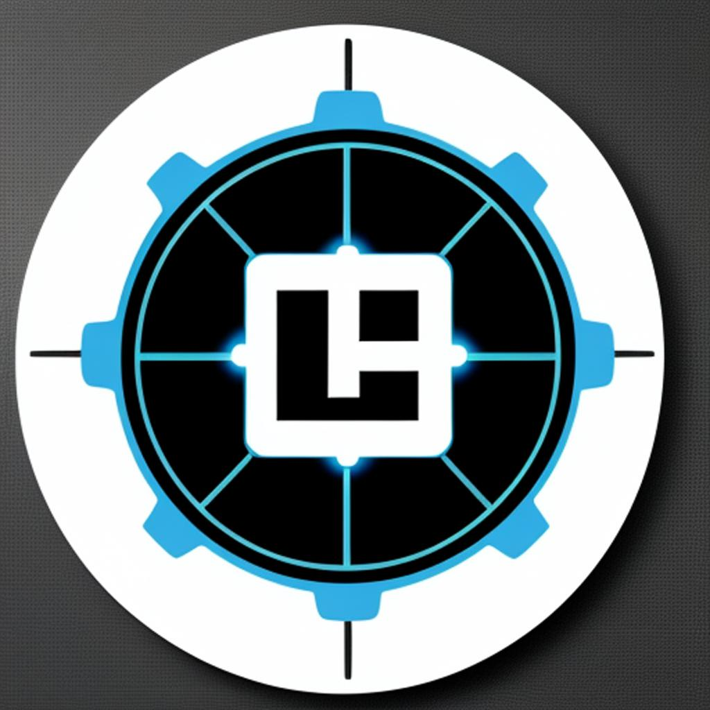
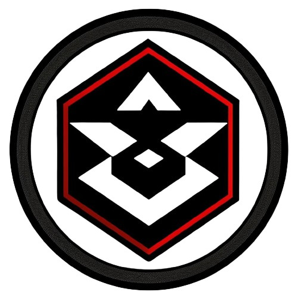
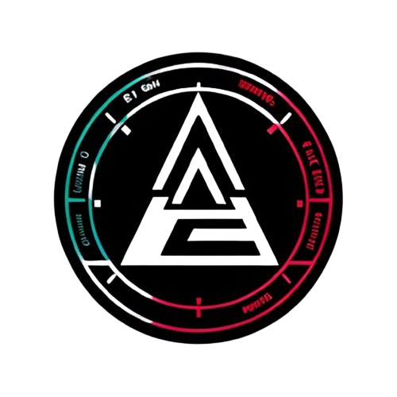

-
➔ Directorybrute
Directorybrute is a directory and file brute-force tool designed to discover hidden directories and files on web servers using HTTP requests.
-
➔ Cerbero

Cerbero is a command line tool designed to perform brute force attacks against SSH and FTP services. This tool can be useful for security audits or penetration tests where the resistance of access credentials needs to be tested.
-
➔ suBruteforce
suBruteforce is a brute force tool designed to test user and password combinations on Unix systems using the su command. This tool is written in Python and provides a friendly and customizable interface for performing brute force attacks.
-
➔ kali-environment-install
Repository where you can decorate your Kali Linux environment in a more professional and beautiful way, giving it a more hacker style...
-
➔ passwordGenerator
passwordGenerator is a command line tool for generating strong passwords with encryption options and estimated time to crack them. This tool is designed to be easy to use and highly configurable to meet various security needs.
-
➔ revShell
revShell is a powerful and versatile tool for generating various types of reverse shells in multiple programming languages. This tool facilitates the quick and efficient generation of reverse shell commands, providing different methods and options for various situations and environments.
-
➔ checkPassword
checkPassword is a command line tool developed in Python that allows you to check if a password has been compromised against known databases of leaked passwords. Use Have I Been Pwned's Pwned Passwords API to perform this verification safely and efficiently.
-
➔ portScan

portScan is a port scanning tool written in Python, designed for network auditing and ethical hacking. It allows you to scan open, closed and filtered ports on an IP or a range of IPs, providing detailed information about the services running on the open ports
-
➔ crackerPass

crackerPass is a command line tool designed to crack passwords using dictionaries and verify password hashes in various formats. The tool uses different Python libraries to handle and verify password hashes, providing flexibility to work with various common hashing algorithms.
-
➔ superTool

SuperTool is an ethical hacking tool designed to perform advanced network scans, search for vulnerabilities in websites and manage exploits. Use tools like nmap for network scanning and searchsploit to look for exploits.
-
➔ keylogger_script
This repository contains a set of scripts for capturing keyboard input on Linux and Windows systems. The purpose of these scripts is to demonstrate how a basic keylogger can be implemented in different environments.
-
➔ hackerlabsCtfs-tool

HackerlabsCtfs Tool is a command line tool designed to interact with the HackerLabs page. It allows you to extract and display information about CTF (Capture The Flag) machines available on the HackerLabs platform. You can filter machines by difficulty, search by creator, get a random machine, and more.
-
➔ HackerLabs
HackerLabs is a free platform designed so that both beginners and cybersecurity experts can practice ethical hacking in an accessible and safe way. Using Docker, we offer a controlled, easy-to-use environment for deploying vulnerable labs, allowing you to focus on learning without worrying about technical complexity.